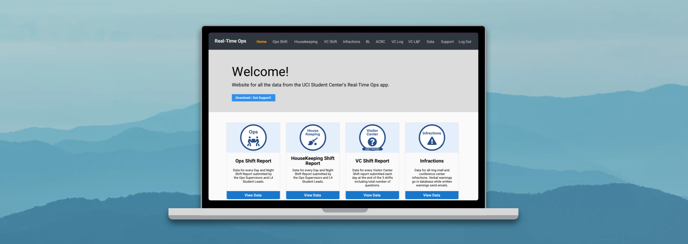
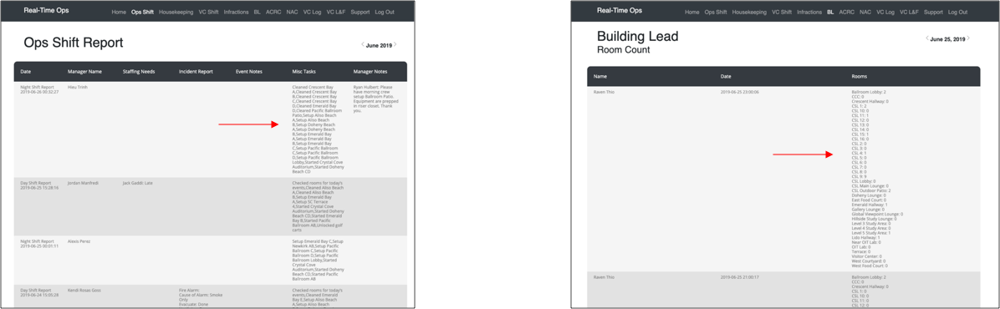
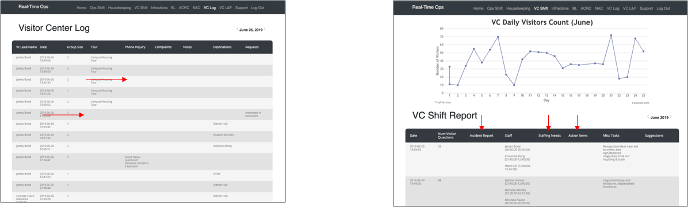
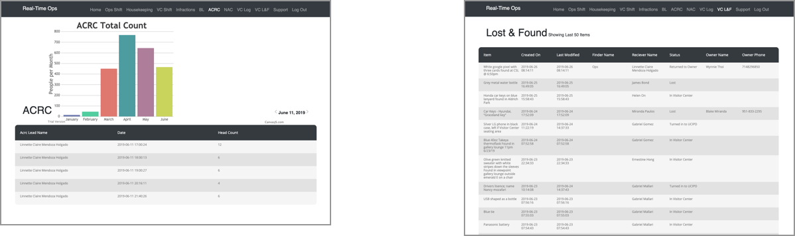
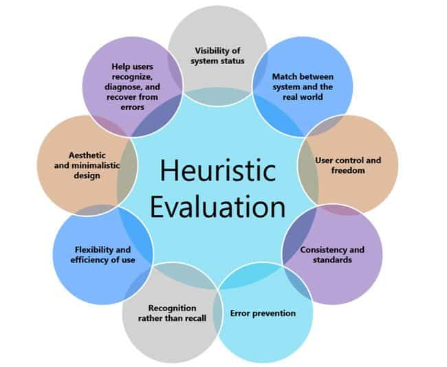
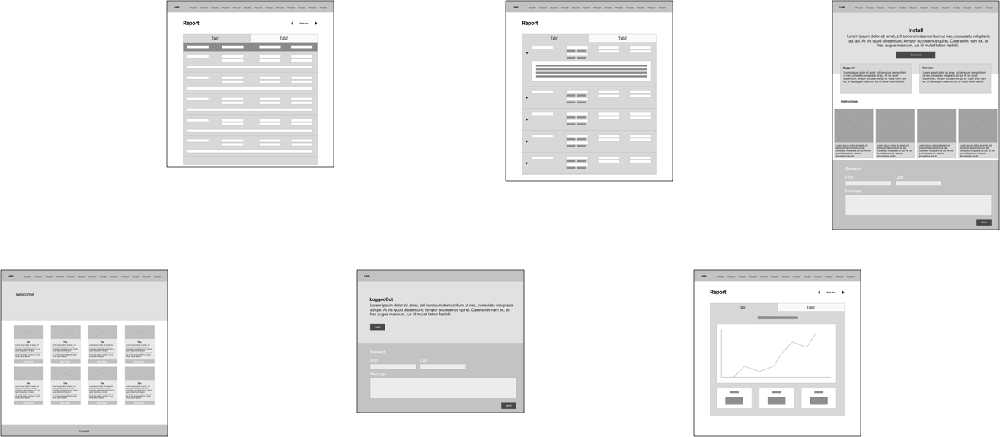
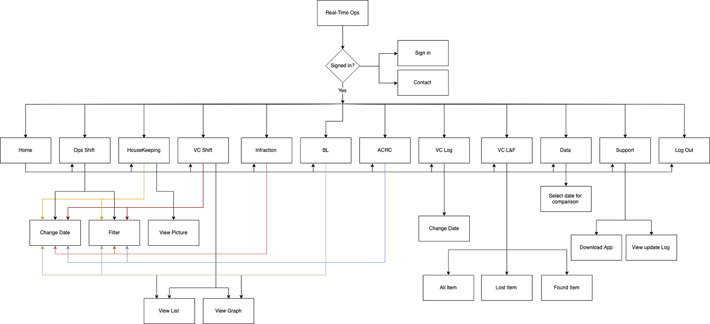

Understanding the dashboard’s problems
The existing interface made it difficult to find useful shift report information. I focused the redesign on three issues: information overload, unused space, and limited control over the displayed data.
Information overload

Unused space

Limited control
The original experience did not offer filters, search, or sufficient control over the displayed information.

Research and evaluation
More than ten interviews
Heuristic evaluation
I used Nielsen’s ten usability heuristics to assess the interface and guide the redesign. This helped connect interview feedback with specific usability problems.

Designing the experience
Wireframes
I created wireframes for the main pages to present the proposed structure to operations managers and gather feedback.

User flow
I mapped the user flow to show how the website’s pages and tasks connected.

Prototype and stakeholder review
After operations managers approved the wireframes, I created the prototype. I then shared it with managers and other full-time staff for a second review.
Watch the Real-Time Ops prototype on YouTube
The design process brought together staff feedback, usability principles, and stakeholder review to clarify the proposed dashboard experience.